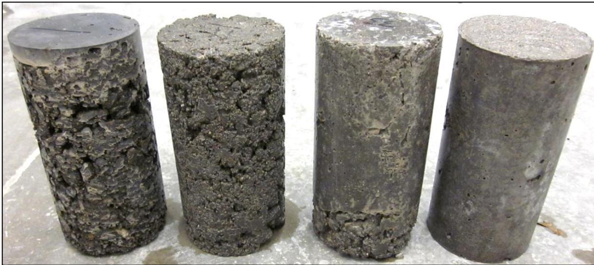
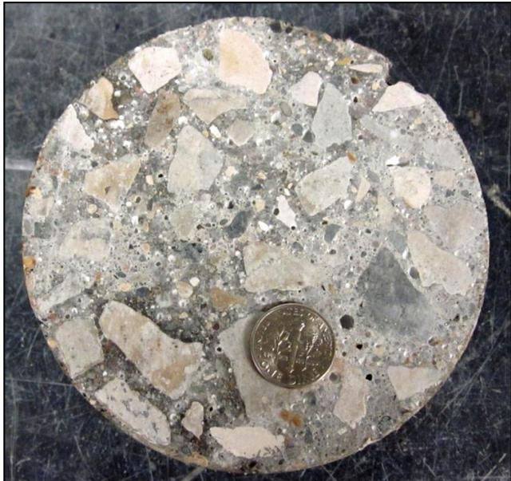
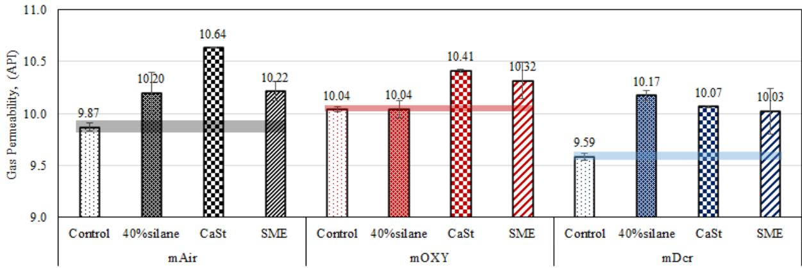
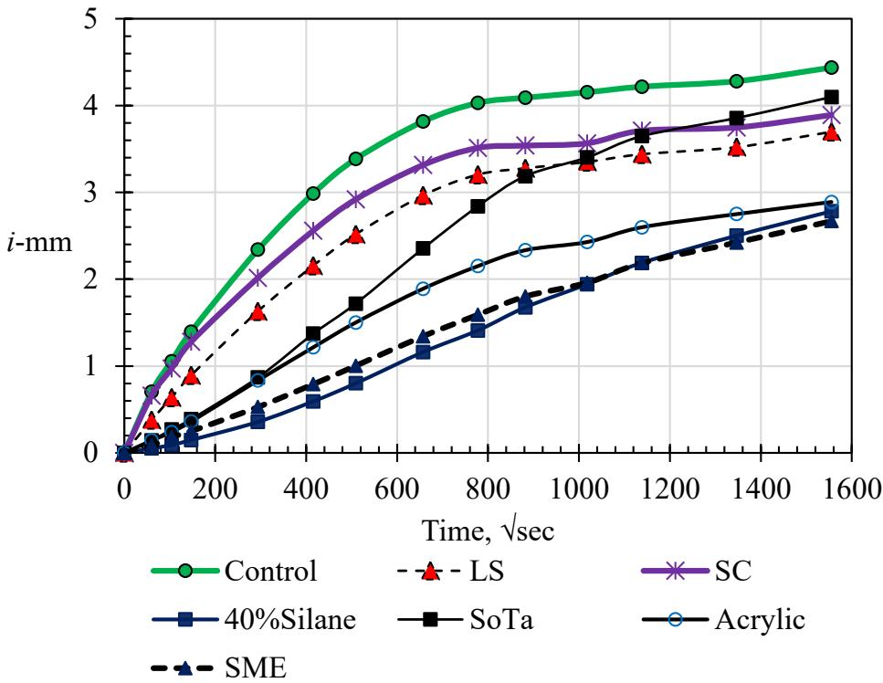
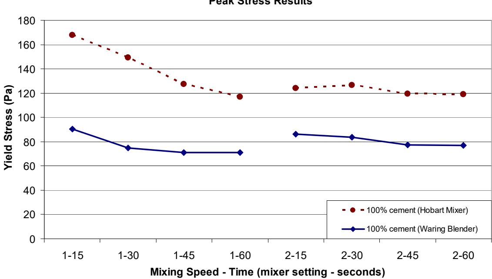

Transport Properties & Permeability
Transport properties describe the mechanisms by which fluids, gases, and ions move through concrete, a process that fundamentally dictates long-term durability because the ingress of moisture and aggressive substances drives most deterioration distresses. These transport characteristics are primarily governed by the pore structure of the hardened cement paste, specifically regarding pore connectivity, volume, and saturation levels, which determine the material’s overall permeability to environmental exposure [1]. The water-to-cement ratio serves as the critical determinant of this permeability, where lower ratios reduce capillary porosity in the paste matrix, thereby enhancing strength and restricting the migration of deleterious agents [2]. Internal curing techniques can further refine this microstructure by promoting continued hydration without altering the effective water-to-cement ratio, which reduces autogenous shrinkage and lowers transport properties such as chloride diffusion [3]. Surface treatments like penetrating sealers mitigate these transport pathways by chemically modifying pore structures to block capillary suction and diffusion mechanisms that facilitate the ingress of water and ions [4].
CP Tech Center reports covering “Transport Properties & Permeability” also include the following subtopics: Air Permeability Test, Drop Test, Low-Permeability Concrete, Mercury Intrusion Porosimetry, Penetrating Sealers, and Rapid Chloride Migration.
Transport Properties & Permeability defines how fluids and ions move through concrete, a process that dictates long-term durability and structural integrity. Air Permeability Test quantifies the gas transport properties of concrete to evaluate pore connectivity and permeability, directly assessing the material’s resistance to fluid ingress that governs durability. Drop Test quantifies surface sorptivity by measuring the timing of water absorption, thereby providing a direct assessment of the permeability characteristics that govern fluid ingress in concrete. Mercury Intrusion Porosimetry quantifies pore size distribution and connectivity to directly characterize the microstructural pathways that govern fluid transport and permeability in concrete. Rapid Chloride Migration quantifies the rate of chloride ion ingress through concrete pores under an applied electrical field, directly measuring the permeability characteristics that govern the transport of aggressive agents responsible for material deterioration. Low-Permeability Concrete serves as a critical durability strategy by engineering a dense microstructure with refined pores that physically restricts the transport of water and aggressive ions through diffusion and capillary suction. Penetrating Sealers mitigate transport properties by chemically modifying pore structures to block the capillary suction and diffusion pathways that facilitate chloride ingress.
Sources (7)
Sub-concepts (6)
Key findings
- Two-stage mixing reduced permeability by enhancing microstructural uniformity and paste-aggregate bonding, although it often decreased air entrainment efficiency [5].
- Freezing-thawing durability in non-air-entrained concrete depended on specific porosity thresholds that varied by cementitious material composition, whereas air-entrained durability relied primarily on air void system geometry rather than permeability metrics [6].
- Exceeding the minimum paste volume required for aggregate void filling increased chloride penetrability and air permeability because the cement paste was more conductive than the aggregate [2].
- Using lightweight fine aggregate for internal curing reduced transport properties, as evidenced by lower rapid chloride permeability and higher surface resistivity compared to control mixes [3].
- High-volume fly ash reduced chloride ion penetrability to low levels, while discrepancies between cast and cored samples highlighted the critical role of curing conditions on pore structure development [7].
- Sealers that effectively reduced water absorption simultaneously trapped moisture within the concrete matrix, potentially aggravating freeze-thaw deterioration by impeding vapor diffusion [4].
- Air permeability testing was not an effective method for characterizing the durability of concrete treated with sealers because there was no correlation between air permeability index and water absorption rates [4].
- Performance-engineered specifications increasingly replaced prescriptive cementitious content limits with transport property thresholds, such as requiring rapid chloride penetration test results below specific coulomb values or surface resistivity exceeding defined kΩ-cm levels [1].
Mixture Design for Permeability Control
Evidence: 4 reports (3 primary)
Mixture design for permeability control focuses on optimizing the volume and quality of cement paste to create a dense microstructure that restricts fluid ingress [2]. The water-to-cement ratio is the primary determinant of this density, as lower ratios reduce capillary porosity and significantly enhance long-term durability [2]. Designers must balance adequate paste content to ensure proper consolidation against excessive binder levels that can compromise resistance to aggressive ions [2]. Advanced strategies such as internal curing refine the pore structure by promoting continued hydration without altering the effective water-to-cement ratio, further reducing transport properties [3].
The figure below illustrates how varying the water-to-cement ratio directly influences the permeability of both cement paste and concrete.
 Influence of w/c on the permeability of (a) cement paste and (b) concrete [2]
Influence of w/c on the permeability of (a) cement paste and (b) concrete [2]
The figure plots a curve showing that as the water-to-cement ratio increases, the permeability coefficient rises exponentially. Permeability increases for concrete with w/c greater than 0.42 as a result of the increased capillary volume (Mindess et al. 2003).
Research problem — Conventional mixture design practices often rely on prescriptive limits like minimum cementitious content, which can inadvertently increase permeability and shrinkage risks rather than enhancing durability [1] [2]. Achieving low water-to-cement ratios necessary for dense microstructures frequently leads to incomplete hydration and increased capillary porosity unless internal curing mechanisms are employed to sustain the reaction [3]. Developing mixtures that simultaneously resist specific chemical attacks from deicing salts while maintaining early-age strength requires navigating complex trade-offs between supplementary cementitious material volumes and binder content [7]. There is a critical need to transition from strength-based specifications to performance-engineered approaches that directly validate transport properties, thereby optimizing pore structure connectivity without excessive carbon-intensive materials [1].
The figure below illustrates how varying water-to-cement ratios affect permeability in plain portland cement mixes with a constant binder content of 400 pcy.

Cylindrical concrete specimens with varying water-to-cement ratios. [2]The image displays four cylindrical concrete cores arranged in a row, exhibiting distinct surface textures that range from highly porous and rough on the left to smoother and denser on the right. These specimens represent plain portland cement content mixes with water-to-cement ratios increasing from 0.35 to 0.50, visually demonstrating how higher water content correlates with a more consolidated and less porous microstructure.
State of the art — Modern mixture design prioritizes minimizing the water-to-cementitious materials ratio to reduce capillary porosity, while optimizing paste volume relative to aggregate voids to avoid the diminishing returns and increased permeability associated with excessive binder content [2]. The industry is transitioning from prescriptive strength-based specifications toward performance-engineered mixtures that utilize supplementary cementitious materials and internal curing mechanisms to refine pore structure and directly control transport properties [7] [1] [3].
The figure below illustrates how specific mix proportions influence porosity, a key factor in controlling transport properties.

Porosity of mixture with 400 pcy of plain portland cement content with 0.40 of w/c [2]The image displays a circular cross-section of concrete containing coarse aggregate and a fine matrix, with a coin placed for scale.
Findings from the reports
- Demonstrated that transport properties are critically dependent on the ratio of paste volume to aggregate voids, with insufficient paste leading to poor permeability due to uncoated aggregates and percolating voids [2].
- Revealed that exceeding the critical threshold for paste volume paradoxically increases chloride penetrability and air permeability because the cement paste is more conductive than the aggregate, creating a trade-off between consolidation and durability [2].
- Found that incorporating lightweight fine aggregate for internal curing significantly reduced transport properties, evidenced by lower rapid chloride permeability values and higher surface resistivity readings compared to control mixes [3].
- Showed that the improved durability from internal curing contributed to a predicted service life extension of approximately 18.7 years, offsetting higher initial construction expenses through reduced lifecycle costs [3].
- Reported that transport properties are critical because all durability-related distresses involve the transport of moisture and deleterious ions into concrete, necessitating assessment methods that correlate with long-term performance [1].
- Observed that the field has shifted toward using electrical resistivity tests as rapid indicators of chloride ion penetration resistance to avoid the chemical hazards and limitations of older methods [1].
- Noted that performance-engineered concrete specifications increasingly replace prescriptive cementitious content limits with transport property thresholds, such as requiring specific rapid chloride penetration test results or surface resistivity values to ensure durability [1].
Novelty & rigor — Research demonstrates that optimizing mixture design for permeability control requires minimizing paste volume to just above the critical threshold needed to fill aggregate voids, as excess binder paradoxically worsens transport properties due to the higher conductivity of the cement paste compared to the aggregate [2]. Novel approaches incorporate lightweight fine aggregates for internal curing to refine pore structure and enhance hydration, thereby reducing permeability and extending service life without relying on increased cementitious content [3]. Reproducible experimental protocols utilize full factorial designs varying water-to-binder ratios and binder types to establish specific volume thresholds, while field-deployable electrical resistivity methods provide rapid, nondestructive quality control that correlates with long-term durability performance [1] [2] [3].
Reported values
| Parameter | Value | Context | Source |
|---|---|---|---|
| paste volume relative to aggregate voids | 1.5 to 2 times | space between the combined aggregate particles | [2] |
| service life extension | 18.7 years | IC section compared to control section | [3] |
| service life extension | about 20 years | IC section compared to control section | [3] |
While optimizing the paste-to-void ratio is fundamental for minimizing percolating pathways, incorporating lightweight fine aggregates for internal curing offers an alternative mechanism to significantly reduce rapid chloride permeability and enhance surface resistivity in low water-to-cement ratio systems. These mixture-level interventions aim to achieve specific transport property thresholds, such as limiting rapid chloride penetration test results or maximizing electrical resistivity, which serve as performance-engineered proxies for long-term durability rather than relying solely on prescriptive cementitious content limits. [1] [2] [3]
The figure below illustrates how surface resistivity evolves over time across different locations.
 Surface resistivity versus age for various locations [1]
Surface resistivity versus age for various locations [1]
The figure displays a grid of scatter plots showing the relationship between sample age in days and surface resistivity (kΩ·cm) across numerous distinct construction projects.
Implications — Mixture design should prioritize meeting minimum paste volume requirements rather than maximizing binder content, as excessive cementitious material actively compromises transport resistance and durability metrics [2]. Specifiers must shift from prescriptive strength-based criteria to performance-engineered mixtures that utilize early-age resistivity measurements to predict long-term chloride resistance, thereby enabling lower cement content without sacrificing durability [1]. Incorporating lightweight fine aggregate for internal curing refines the pore structure and reduces permeability, offering a pathway to extend service life in aggressive environments despite higher initial material costs [3].
Limitations — Optimizing mixtures for durability requires balancing the minimum paste needed for consolidation against the permeability penalty of higher binder contents, as performance in transport tests often falls off once the critical paste threshold is exceeded [2]. Standard transport property tests may show only modest differences that are then extrapolated into diffusion models to predict long-term durability benefits, which can diverge from actual field observations over short periods [3].
Measurement Variability and Testing Challenges
Evidence: 4 reports (4 primary)
Concrete permeability is governed by the size, distribution, and connectivity of its internal pore network, which dictates how fluids and ions penetrate the material [4]. Testing variability arises because different measurement techniques capture distinct physical phenomena; for instance, gas permeability tests often fail to predict performance regarding liquid water dynamics or sealer efficacy [4]. The interpretation of test results is further complicated by complex interactions between material microstructure and environmental conditions, such as how pore size influences freezing behavior or how surface treatments alter wettability without necessarily changing bulk permeability [4] [6].
The following figure illustrates the relationship between durability and rapid chloride ion permeability.
 Durability factor as a function of rapid chloride ion permeability [6]
Durability factor as a function of rapid chloride ion permeability [6]
The figure plots the Durability Factor (DF, %) on the y-axis against Charge Passed (k, Coulomb) on the x-axis to evaluate concrete performance. It compares two distinct groups of mixtures: those without air-entraining agent (AEA), which show a strong inverse relationship where durability drops as charge passed increases, and those with AEA, which maintain high durability factors regardless of the permeability values. This data illustrates that while chloride ion permeability is a measure of transport properties, it does not directly correlate with freeze-thaw durability in air-entrained concrete.
Research problem — Standardized air permeability testing fails to accurately predict the freeze-thaw durability of concrete treated with penetrating sealers because it measures gas transport rather than the liquid and vapor mechanisms that drive deterioration [4]. There is a lack of robust evaluation tools capable of comparing diverse chemical families of surface treatments to identify trade-offs between reducing liquid ingress and maintaining necessary vapor permeability for drying [4]. The industry lacks clear guidelines on whether low-permeability concrete requires air entrainment, as it is unclear if microstructural density alone ensures durability or if high compressive strength must also be considered a critical co-factor [6].
The figure below illustrates the air permeability index of concrete, highlighting the specific gas transport metric that standard testing relies upon.

Air (gas) permeability index for concrete [4]The figure displays the air permeability index (API) of concrete specimens treated with various surface sealers, including silane, CaSt, and SME. Specimens from the mDcrack mixture exhibited higher API values compared to those from the mAir and mCaOXY mixtures. Surface treatments such as SoTa (labeled CaSt) and SME resulted in a reduction of air permeability, acting as pore blockers or liners.
State of the art — Current practice recognizes that gas-based permeability metrics are insufficient for characterizing sealer performance because they do not correlate with liquid water exchange or durability outcomes [4]. Established knowledge now prioritizes desaturation tests to evaluate vapor exchange mechanisms and contact angle measurements to predict early-age capillary suction reduction, rather than relying solely on traditional gas permeability methods [4].
The figure below illustrates how moisture uptake evolves over time, providing empirical data that supports these advanced characterization methods.

Moisture uptake results with time [4]The figure plots the cumulative moisture uptake (i) in millimeters against the square root of time for concrete specimens treated with various sealers compared to an untreated control. The data demonstrates that while some treatments like LS and SC did not significantly reduce water ingress, others such as acrylic provided a significant reduction in absorption initially.
Findings from the reports
- Demonstrated that for non-air-entrained concrete, freeze-thaw durability is critically dependent on achieving a dense microstructure with low permeability and high compressive strength, whereas air-entrained concrete relies primarily on the geometry of the air void system rather than general transport properties [6].
- Revealed that penetrating sealers can trap moisture within the concrete matrix by impeding vapor diffusion, which increases saturation during drying phases and potentially aggravates freeze-thaw deterioration in concretes with adequate air-void systems [4].
- Showed that air permeability tests do not correlate with water absorption or desaturation rates, rendering them ineffective for characterizing the performance of concrete treated with sealers compared to desaturation tests [4].
- Identified that surface resistivity and rapid chloride penetration measurements exhibit significant variability and potential inaccuracies when samples suffer from inadequate consolidation or improper conditioning, leading to distorted transport property indicators [1].
- Observed that high-volume fly ash mixtures significantly reduce chloride ion penetrability and calcium oxychloride formation, although field performance discrepancies highlight the critical role of curing conditions on pore structure development [7].
- Found that while hydrophobic treatments improve initial wettability, their effectiveness against chloride ingress varies by mode of action, with some pore-blocking agents adversely affecting freeze-thaw resistance despite reducing moisture potential [4].
Novelty & rigor — Research demonstrates that standard air permeability testing is fundamentally misaligned with the performance of penetrating sealers, as gas transmission metrics fail to correlate with critical liquid exchange and desaturation rates necessary for freeze-thaw durability [4]. Novel assessment approaches, such as desaturation testing and wettability analysis, have been established to accurately characterize moisture exchange mechanisms that traditional gas-based methods overlook in sealed systems [4]. Emerging rapid field and laboratory tools, including the drop test for local permeability inference and low-temperature differential scanning calorimetry for expansive phase quantification, provide distinct mechanistic insights that challenge reliance on conventional single-parameter durability indicators [7].
The figure below illustrates the freeze-thaw test setup used to evaluate these moisture exchange mechanisms.
 Schematic of the modified ASTM C666 test setup for assessing concrete resistance to rapid freezing and thawing. [4]
Schematic of the modified ASTM C666 test setup for assessing concrete resistance to rapid freezing and thawing. [4]
The figure displays a cross-section of a cylindrical container holding a concrete specimen, which is sealed with butyl rubber tape and sealer before being submerged in testing fluid within a larger vessel supported by spacers. This apparatus facilitates the one-dimensional introduction of freezing fluid to assess freeze-thaw performance, a durability mechanism driven by the ingress of moisture and pore saturation levels.
Reported values
| Parameter | Value | Context | Source |
|---|---|---|---|
| chloride ingress reduction | 26% | 40% silane treatment in the top layer | [4] |
| chloride ingress reduction | 36% | SME treatment in the top layer | [4] |
| average resistivity | 26.8 kohm-cm | cast samples at 56 days | [7] |
| calcium oxychloride content | 30.5 percent | QMC concrete mixtures | [7] |
| calcium oxychloride content | 8.4 percent | M-QMC concrete mixtures | [7] |
| durability factor | 85 percent | Mix 1 and 2 | [7] |
| surface resistivity | 26.8 kohm-cm | cast samples at 56 days | [7] |
| air content | 6% | concrete with AEA (measured with ASTM C231) | [6] |
| fly ash content | 3.4% | I-FA | [6] |
| porosity | 3.4% | Type I cement with Class C fly ash (I-FA) concrete | [6] |
| porosity | 5% | Type IP cement concrete | [6] |
| rapid chloride ion permeability | 185 Coulombs | Type I cement with Class C fly ash (I-FA) concrete (durability factor > 85%) | [6] |
| rapid chloride ion permeability | 608 Coulombs | Type IP cement concrete (durability factor > 85%) | [6] |
| spacing factor | 0.22 mm | concrete with AEA measured using RapidAir | [6] |
| inadequate core consolidation frequency | 66.1% | cores evaluated | [1] |
2 more distinct values omitted here; the full span-verified set is in the quantities sidecar.
Implications — Designers must recognize that low permeability alone is insufficient for durability, requiring a coupled approach with compressive strength and appropriate air-void systems to ensure freeze-thaw resistance in dense concretes [6]. Quality control protocols should prioritize mixture design optimization over real-time field acceptance testing, as emerging rapid methods often lack the reliability needed for immediate construction decisions compared to established laboratory evaluations [7]. Specifiers must carefully balance hydrophobicity with vapor permeability when selecting sealers, avoiding pore-blocking mechanisms that trap moisture and compromise frost resistance in saturated environments [4].
The relationship between water-to-binder ratio and durability is illustrated in the following figure.
 Durability factor as a function of w/b [6]
Durability factor as a function of w/b [6]
The figure plots the Durability Factor (DF, %) against the water-to-binder ratio (w/b) for concrete mixtures containing fly ash or inert powder, with and without air-entraining agents. For concrete without AEA, the durability factor decreases sharply as the w/b ratio increases, illustrating that lower water-to-cement ratios reduce capillary porosity and restrict the migration of deleterious agents. In contrast, concrete with AEA maintains a high durability factor regardless of the w/b ratio, demonstrating that freeze-thaw resistance depends more on the air-void system than on permeability in these conditions.
Limitations — Standard gas permeability metrics fail to predict liquid water absorption or desaturation rates in hydrophobically treated concrete, rendering traditional indices ineffective for assessing durability in wet-dry cycles [4]. Electrical resistivity measurements exhibit significant variability depending on sample geometry, temperature, and conditioning methods, requiring normalization to ensure accurate interpretation of chloride resistance [1]. Emerging permeability assessment techniques remain under development and lack standardized protocols due to operator dependency and equipment inconsistencies, limiting their reliability for routine quality control [7] [1].
The following figure illustrates averaged surface resistivity results for three different mixes.
 Averaged surface resistivity results of three mixes [7]
Averaged surface resistivity results of three mixes [7]
The figure plots the progression of surface resistivity over time for four distinct sample groups, including cast samples and various core extractions. The average resistivity of 26.8 kohm-cm for cast samples at 56 days indicates that the mixtures fall within a desirable low chloride ion penetrability classification.
Mixing Methodology and Process Effects
Evidence: 1 report (1 primary)
Concrete mixing is a complex process where factors such as mixer type, loading sequence, and mixing time fundamentally influence the homogeneity and quality of the final product [5]. The efficiency of mixing is determined by how well these parameters are matched to the specific equipment to ensure uniform distribution of ingredients, which directly impacts properties like workability, density, and strength [5]. Standardized procedures define specific sequences for adding materials, such as pre-mixing cement with water or aggregates, to optimize the interfacial transition zone and overall microstructure [5].
Research problem — Researchers seek to understand how to balance microstructural refinement with air void system integrity, as optimizing mixing energy for paste homogeneity often reduces air content and increases susceptibility to freeze-thaw deterioration [5]. There is a need to determine the specific trade-offs between advanced mixing processes that enhance strength consistency and those that compromise durability mechanisms essential for long-term performance in harsh environments [5].
State of the art — High-shear and two-stage premixing processes are currently recognized as superior to conventional methods for enhancing paste homogeneity, deflocculating cement agglomerations, and improving interfacial transition zone quality [5]. While these advanced techniques reduce permeability by limiting direct water contact with aggregates, they often compromise air entrainment efficiency due to the limited ability of fine binder materials to entrap air during slurry mixing [5]. Current practice requires careful optimization of admixture dosage sequences, particularly regarding the timing of air-entraining agent addition, to balance the permeability benefits of improved particle dispersion with the need for adequate freeze-thaw resistance [5].
Findings from the reports
- Demonstrated a divergence between laboratory simulations and field performance, where two-stage mixing showed negligible or slightly increased permeability in controlled tests but significantly lower permeability in real-world applications [5].
- Revealed that the durability benefits of two-stage mixing stem from enhanced microstructural uniformity and superior paste-aggregate bonding, which reduce porosity and increase micro-hardness at the interface [5].
- Identified that optimal mixing energy is crucial for deflocculating cement particles to achieve the homogeneity required for improved transport resistance in two-stage mixed concrete [5].
- Observed a trade-off where two-stage mixing reduces air entrainment efficiency due to the limited ability of fine binder materials to entrap air during slurry preparation, necessitating careful admixture management [5].
Novelty & rigor — The two-stage mixing approach introduces novelty by decoupling slurry preparation from aggregate coating, utilizing high-shear energy to deflocculate cementitious particles and create a more homogeneous paste before it coats the aggregates [5]. Reproducing this methodology requires adhering to specific procedural details, such as using high-shear mixers at defined speeds for slurry preparation and spraying air-entraining agents onto aggregates during charging to mitigate absorption by fine particles [5].
Reported values
| Parameter | Value | Context | Source |
|---|---|---|---|
| chloride permeability | 30% | two-stage mixed concrete vs conventional concrete (field studies) | [5] |
| chloride permeability reduction | 30 percent | two-stage mixed concrete compared to conventional concrete | [5] |
| degree of hydration | 6% | high shear mixing vs Hobart mixer (average increase) | [5] |
Implications — Designers should prioritize energy-optimized mixing protocols, such as high-shear two-stage methods, to achieve superior particle dispersion and denser microstructures that enhance resistance to chloride ingress [5]. Specifiers must account for the trade-off between improved transport properties and reduced air entrainment efficiency in slurry-based mixing, requiring adjusted admixture strategies to maintain freeze-thaw durability [5].
The following figure illustrates the peak stress results obtained from different vane geometries.

Peak stress results for cement slurries mixed using a Hobart mixer and a Waring Blender at varying speeds and durations. [5]The figure plots yield stress against mixing time and speed settings, showing that higher energy inputs generally reduce the peak stress of the slurry. This demonstrates how high shear mixers provide more energy to the system and create a greater structural break down of the slurry than did the Hobart mixer, resulting in lower shear stress values.
Limitations — Two-stage mixing can reduce air entrainment efficiency because fine particles absorb the agents, which may increase susceptibility to freeze-thaw deterioration despite improved uniformity [5]. There is a weak correlation between total air content and spacing factor in this method, meaning that optimizing mix consistency for durability requires careful balancing of admixture timing rather than relying solely on paste uniformity [5]. Mixing protocol alone does not guarantee superior ion resistance, as chloride permeability results between conventional and two-stage mixed concrete are often not significantly different across test conditions [5].
The following figure illustrates how these varying mixing protocols directly influence the air content of fresh concrete.
 Effects of mixing method on the air content of fresh concrete [5]
Effects of mixing method on the air content of fresh concrete [5]
The figure displays a bar chart comparing the air content percentages across three different cementitious mixtures using three distinct mixing protocols. This reduction in air content is attributed to the limited ability of fine binder materials to entrap air during the slurry mixing process, which can increase susceptibility to freeze-thaw deterioration despite improved uniformity.
Related concepts
In this hierarchy
- Parent: Durability & Materials-Related Distress
- Child: Air Permeability Test
- Child: Drop Test
- Child: Low-Permeability Concrete
- Child: Mercury Intrusion Porosimetry
- Child: Penetrating Sealers
- Child: Rapid Chloride Migration
Related by shared evidence
- CP Tech Center Reports — shares 7 reports
- Fly Ash — shares 7 reports
- Supplementary Cementitious Materials — shares 7 reports
- Low-Permeability Concrete — shares 6 reports
- Cement Hydration — shares 5 reports
- Cementitious Materials & Chemistry — shares 5 reports
- Concrete Materials & Mixtures — shares 5 reports
- Freeze-Thaw Durability — shares 5 reports
Similar topics
- Low-Permeability Concrete
- Air Permeability Test
- Rapid Chloride Migration
- Durability & Materials-Related Distress
- Penetrating Sealers
- Drop Test
- Surface Resistivity
- Pervious Concrete
References
- J. Gross, J. Weiss, T. Ley, P. Taylor, N. Weitzel, T. Van Dam, G. Smith, and C. Jones, "Performance-Engineered Concrete Paving Mixtures," National Concrete Pavement Technology Center, Iowa State University, Ames, IA, Rep. TPF-5(368), 2022. [Online]. Available: https://www.intrans.iastate.edu/wp-content/uploads/2023/04/performance-engineered_concrete_paving_mixtures_w_cvr.pdf
- P. Taylor, F. Bektas, E. Yurdakul, and H. Ceylan, "Optimizing Cementitious Content in Concrete Mixtures for Required Performance," National Concrete Pavement Technology Center, Ames, IA, 2012. [Online]. Available: https://www.intrans.iastate.edu/wp-content/uploads/2018/03/taylor_ocm_w_cvr2.pdf
- P. Taylor, T. Hosteng, X. Wang, and B. Phares, "Evaluation and Testing of a Lightweight Fine Aggregate Concrete Bridge Deck in Buchanan County, Iowa," National Concrete Pavement Technology Center and Bridge Engineering Center, Ames, IA, Rep. TR-648, 2016. [Online]. Available: https://www.intrans.iastate.edu/wp-content/uploads/2018/03/Buchanan_LWFA_bridge_deck_w_cvr.pdf
- J. T. Kevern, G. Adil, P. Taylor, S. Sadati, and K. Wang, "Evaluation of Penetrating Sealers for Concrete," National Concrete Pavement Technology Center, Iowa State University, Ames, IA, Rep. TR-765, 2022. [Online]. Available: https://www.intrans.iastate.edu/wp-content/uploads/2022/06/concrete_penetrating_sealers_eval_w_cvr.pdf
- T. D. Rupnow, V. R. Schaefer, K. Wang, and B. L. Hermanson, "Improving PCC Mix Consistency and Production Rate through Two-Stage Mixing," Center for Transportation Research and Education, Ames, IA, Rep. TR-505, 2007. [Online]. Available: https://www.intrans.iastate.edu/wp-content/uploads/2018/03/two-stage-mix-1.pdf
- K. Wang, G. Lomboy, and R. Steffes, "Investigation into Freezing-Thawing Durability of Low-Permeability Concrete with and without Air Entraining Agent," National Concrete Pavement Technology Center, Ames, IA, 2009. [Online]. Available: https://www.intrans.iastate.edu/wp-content/uploads/2018/03/low-permeability-concrete.pdf
- X. Wang, P. Taylor, and D. King, "Evaluation of Modified Concrete Mixture Proportions for the City of West Des Moines," National Concrete Pavement Technology Center, Ames, IA, 2016. [Online]. Available: https://www.intrans.iastate.edu/wp-content/uploads/2018/03/WDM_modified_concrete_mixture_proportions_w_cvr.pdf
Feedback on this page